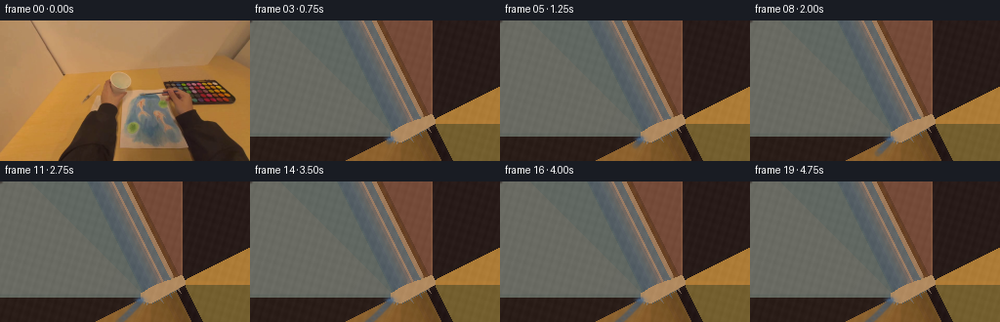
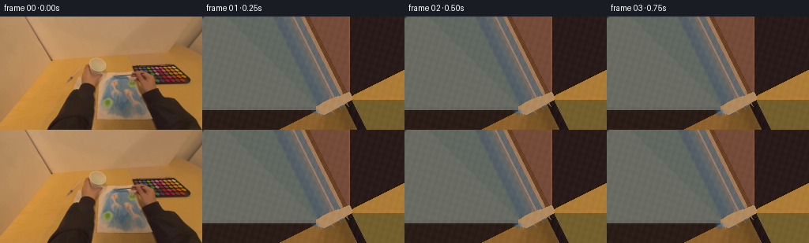
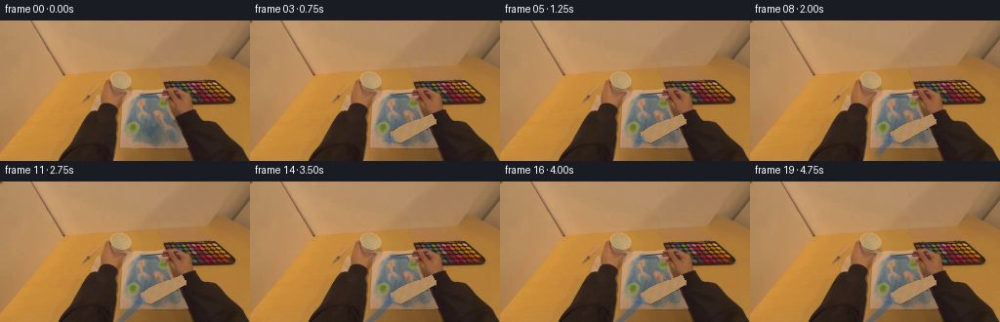

CODING AGENTS AS PIXEL WORLD MODELS
traex/DeepSeek-V4.1-Flash · common50_0017
点击播放 · 原生 RGB 像素
逐轮保存的候选
回放视频、检查图与代码变化。
每份候选均可单独播放。实际图片检查记录在下方工具轨迹中。
候选 01播放与检查图
点击播放 · 原生 RGB 像素

展开代码变化
--- 上一保存版本
+++ 本次保存版本
@@ -0,0 +1,274 @@
+"""Generate a short first-person painting continuation from first_frame.png."""
+
+from pathlib import Path
+
+import cv2
+import numpy as np
+from PIL import Image
+
+import artifact_io
+
+
+ROOT = Path(__file__).resolve().parent
+FRAME_COUNT = 20
+HEIGHT = 144
+WIDTH = 256
+
+
+def smoothstep(t):
+ t = np.clip(t, 0.0, 1.0)
+ return t * t * (3.0 - 2.0 * t)
+
+
+def polygon_mask(points):
+ mask = np.zeros((HEIGHT, WIDTH), np.uint8)
+ cv2.fillPoly(mask, [np.asarray(points, np.int32)], 255)
+ return mask.astype(np.float32) / 255.0
+
+
+def make_brush_mask():
+ # The brush enters the hand near (189, 104) and tapers toward its
+ # bristles at the lower-left edge of the blue patch.
+ mask = polygon_mask(
+ [
+ (186, 96),
+ (190, 104),
+ (154, 124),
+ (145, 121),
+ (144, 115),
+ (157, 107),
+ ]
+ )
+ mask[:, 190:] = 0.0
+
+ # Keep the layer on the darker brush body rather than pulling in paper.
+ lab = cv2.cvtColor(FRAME, cv2.COLOR_RGB2LAB).astype(np.float32)
+ lightness = lab[:, :, 0]
+ chroma = np.hypot(lab[:, :, 1] - 128.0, lab[:, :, 2] - 128.0)
+ object_likelihood = np.clip((178.0 - lightness) / 72.0, 0.0, 1.0)
+ object_likelihood *= np.clip((chroma + 7.0) / 22.0, 0.45, 1.0)
+ mask *= np.maximum(0.38, object_likelihood)
+ mask = cv2.GaussianBlur(mask, (0, 0), 0.72)
+ return np.clip(mask, 0.0, 1.0)
+
+
+def remove_brush(frame, alpha):
+ """Fill the brush footprint from its immediate paper surroundings."""
+ occupied = alpha > 0.025
+ valid = (~occupied).astype(np.uint8)
+ distance, nearest = cv2.distanceTransformWithLabels(
+ valid, cv2.DIST_L2, 5, labelType=cv2.DIST_LABEL_PIXEL
+ )
+ del distance
+
+ # distanceTransformWithLabels labels each zero pixel uniquely. Map each
+ # label back to its source coordinate, then use the nearest source color.
+ source_y, source_x = np.nonzero(valid)
+ lookup = np.zeros(int(nearest.max()) + 1, np.int32)
+ lookup[nearest[source_y, source_x]] = np.arange(source_y.size, dtype=np.int32)
+ flat_indices = lookup[nearest]
+ filled = frame[source_y[flat_indices], source_x[flat_indices]]
+
+ # A tiny amount of local texture prevents the filled strip from looking
+ # like a flat smudge when the brush uncovers it.
+ yy, xx = np.mgrid[:HEIGHT, :WIDTH]
+ grain = (
+ 1.8 * np.sin(xx * 0.73 + yy * 0.21)
+ + 1.2 * np.sin(xx * 0.19 - yy * 0.61)
+ + 0.8 * np.cos(xx * 1.37 + yy * 0.47)
+ )
+ filled = np.clip(filled.astype(np.float32) + grain[:, :, None], 0, 255)
+ return filled.astype(np.uint8)
+
+
+def warp_layer(rgb, alpha, matrix):
+ warped_rgb = cv2.warpAffine(
+ rgb,
+ matrix,
+ (WIDTH, HEIGHT),
+ flags=cv2.INTER_LINEAR,
+ borderMode=cv2.BORDER_REFLECT_101,
+ )
+ warped_alpha = cv2.warpAffine(
+ alpha,
+ matrix,
+ (WIDTH, HEIGHT),
+ flags=cv2.INTER_LINEAR,
+ borderMode=cv2.BORDER_CONSTANT,
+ borderValue=0,
+ )
+ return warped_rgb, np.clip(warped_alpha, 0.0, 1.0)
+
+
+def transform_point(point, matrix):
+ homogeneous = matrix @ np.array([point[0], point[1], 1.0], dtype=np.float64)
+ return homogeneous[:2]
+
+
+def draw_soft_segment(canvas, start, end, radius, opacity, color, texture):
+ yy, xx = np.mgrid[:HEIGHT, :WIDTH]
+ ax, ay = start
+ bx, by = end
+ vx, vy = bx - ax, by - ay
+ denom = vx * vx + vy * vy
+ if denom < 1e-5:
+ t = np.zeros_like(xx, dtype=np.float32)
+ else:
+ t = np.clip(((xx - ax) * vx + (yy - ay) * vy) / denom, 0.0, 1.0)
+ px = ax + t * vx
+ py = ay + t * vy
+ distance = np.hypot(xx - px, yy - py)
+ core = np.clip((radius + 0.9 - distance) / 1.7, 0.0, 1.0)
+ halo = np.exp(-0.5 * (distance / (radius + 1.4)) ** 2) * 0.18
+ brushiness = 0.72 + 0.28 * np.clip(texture, 0.0, 1.0)
+ alpha = np.clip((core + halo) * opacity * brushiness, 0.0, 1.0)
+ color_field = color[None, None, :] * (0.78 + 0.36 * texture[:, :, None])
+ return canvas * (1.0 - alpha[:, :, None]) + color_field * alpha[:, :, None]
+
+
+def make_texture(seed):
+ rng = np.random.default_rng(seed)
+ low = rng.random((HEIGHT, WIDTH)).astype(np.float32)
+ low = cv2.GaussianBlur(low, (0, 0), 3.0)
+ low = (low - low.min()) / (low.max() - low.min())
+ fine = cv2.GaussianBlur(rng.random((HEIGHT, WIDTH)).astype(np.float32), (0, 0), 0.7)
+ streaks = 0.5 + 0.5 * np.sin(
+ np.mgrid[:HEIGHT, :WIDTH][0] * 1.45
+ + np.mgrid[:HEIGHT, :WIDTH][1] * 0.37
+ )
+ texture = 0.50 * low + 0.32 * fine + 0.18 * streaks
+ return np.clip(texture, 0.0, 1.0)
+
+
+def blue_patch_region():
+ # Soft-edged mask around the existing blue paint, with enough room for the
+ # short continuation stroke but no spill onto the pale paper.
+ yy, xx = np.mgrid[:HEIGHT, :WIDTH]
+ ellipse = ((xx - 148.0) / 23.0) ** 2 + ((yy - 99.0) / 25.0) ** 2
+ return np.clip((1.10 - ellipse) / 0.22, 0.0, 1.0)
+
+
+FRAME = np.asarray(Image.open(ROOT / "first_frame.png").convert("RGB"), dtype=np.uint8)
+BRUSH_ALPHA = make_brush_mask()
+BRUSH_RGB = FRAME.copy()
+BACKGROUND = remove_brush(FRAME, BRUSH_ALPHA)
+PAINT_REGION = blue_patch_region()
+PAINT_TEXTURE = make_texture(17)
+PAINT_CANVAS = BACKGROUND.astype(np.float32)
+
+
+def generate_frames():
+ frames = [FRAME.copy()]
+ paint_canvas = PAINT_CANVAS.copy()
+ pivot = np.array([188.0, 104.0], dtype=np.float64)
+ tip0 = np.array([147.0, 117.0], dtype=np.float64)
+
+ for index in range(1, FRAME_COUNT):
+ t = index / (FRAME_COUNT - 1)
+ # A restrained wrist rotation gives a readable stroke while keeping the
+ # hand anchored to the tabletop.
+ angle = np.deg2rad(1.5 + 16.5 * smoothstep(t))
+ cos_a, sin_a = np.cos(angle), np.sin(angle)
+ rotation = np.array(
+ [[cos_a, -sin_a, 0.0], [sin_a, cos_a, 0.0], [0.0, 0.0, 1.0]],
+ dtype=np.float64,
+ )
+ translation = np.array(
+ [[1.0, 0.0, 0.55 * np.sin(np.pi * t)], [0.0, 1.0, -0.35 * t], [0.0, 0.0, 1.0]],
+ dtype=np.float64,
+ )
+ transform = translation @ rotation
+ affine = transform[:2, :].copy()
+ affine[:, 2] -= affine[:, :2] @ pivot
+
+ tip = transform_point(tip0, transform)
+ previous_angle = np.deg2rad(
+ 1.5 + 16.5 * smoothstep((index - 1) / (FRAME_COUNT - 1))
+ )
+ previous_cos, previous_sin = np.cos(previous_angle), np.sin(previous_angle)
+ previous_rotation = np.array(
+ [
+ [previous_cos, -previous_sin, 0.0],
+ [previous_sin, previous_cos, 0.0],
+ [0.0, 0.0, 1.0],
+ ]
+ )
+ previous_translation = np.array(
+ [
+ [1.0, 0.0, 0.55 * np.sin(np.pi * max(0.0, (index - 1) / (FRAME_COUNT - 1)))],
+ [0.0, 1.0, -0.35 * max(0.0, (index - 1) / (FRAME_COUNT - 1))],
+ [0.0, 0.0, 1.0],
+ ]
+ )
+ previous_tip = transform_point(tip0, previous_translation @ previous_rotation)
+
+ # Lay down a narrow, bristled continuation of the blue paint.
+ base_blue = np.array([54.0, 88.0, 126.0], dtype=np.float32)
+ paint_canvas = draw_soft_segment(
+ paint_canvas,
+ previous_tip,
+ tip,
+ radius=3.1,
+ opacity=0.26,
+ color=base_blue,
+ texture=PAINT_TEXTURE,
+ )
+ # Add a restrained wet edge and highlight around the contact point.
+ wet = np.exp(
+ -0.5
+ * (
+ ((np.mgrid[:HEIGHT, :WIDTH][1] - tip[0]) / 3.8) ** 2
+ + ((np.mgrid[:HEIGHT, :WIDTH][0] - (tip[1] - 0.7)) / 1.7) ** 2
+ )
+ )
+ wet *= PAINT_REGION * 0.22
+ sheen = np.array([111.0, 139.0, 170.0], dtype=np.float32)
+ paint_canvas = (
+ paint_canvas * (1.0 - wet[:, :, None])
+ + sheen[None, None, :] * wet[:, :, None]
+ )
+
+ background = paint_canvas.copy()
+ warped_rgb, warped_alpha = warp_layer(BRUSH_RGB, BRUSH_ALPHA, affine)
+ warped_alpha *= 1.0 - 0.18 * PAINT_REGION
+
+ # Give the blue bristle end a little more chromatic separation from the
+ # neutral shaft without changing the silhouette.
+ tip_mask = np.exp(
+ -0.5
+ * (
+ ((np.mgrid[:HEIGHT, :WIDTH][1] - tip[0]) / 9.0) ** 2
+ + ((np.mgrid[:HEIGHT, :WIDTH][0] - tip[1]) / 7.0) ** 2
+ )
+ )
+ warped_float = warped_rgb.astype(np.float32)
+ bristle_tint = np.array([44.0, 78.0, 124.0], dtype=np.float32)
+ tint_strength = 0.24 * tip_mask[:, :, None]
+ warped_float = warped_float * (1.0 - tint_strength) + bristle_tint * tint_strength
+ warped_rgb = np.clip(warped_float, 0.0, 255.0).astype(np.uint8)
+
+ # A faint moving contact shadow keeps the brush attached to the paper.
+ shadow_alpha = cv2.GaussianBlur(warped_alpha, (0, 0), 1.7)
+ shadow_alpha = np.roll(np.roll(shadow_alpha, 1, axis=0), 2, axis=1) * 0.10
+ background *= 1.0 - shadow_alpha[:, :, None] * 0.26
+
+ composite = (
+ background * (1.0 - warped_alpha[:, :, None])
+ + warped_rgb.astype(np.float32) * warped_alpha[:, :, None]
+ )
+ frame = np.clip(composite, 0.0, 255.0).astype(np.uint8)
+ frames.append(frame)
+
+ return np.asarray(frames, dtype=np.uint8)
+
+
+def main():
+ frames = generate_frames()
+ assert frames.shape == (FRAME_COUNT, HEIGHT, WIDTH, 3), frames.shape
+ assert frames.dtype == np.uint8
+ assert np.array_equal(frames[0], FRAME)
+ artifact_io.save(frames, ROOT)
+
+
+if __name__ == "__main__":
+ main()
候选 02播放与检查图
点击播放 · 原生 RGB 像素

展开代码变化
--- 上一保存版本
+++ 本次保存版本
@@ -67,7 +67,7 @@
lookup = np.zeros(int(nearest.max()) + 1, np.int32)
lookup[nearest[source_y, source_x]] = np.arange(source_y.size, dtype=np.int32)
flat_indices = lookup[nearest]
- filled = frame[source_y[flat_indices], source_x[flat_indices]]
+ nearest_rgb = frame[source_y[flat_indices], source_x[flat_indices]]
# A tiny amount of local texture prevents the filled strip from looking
# like a flat smudge when the brush uncovers it.
@@ -77,8 +77,10 @@
+ 1.2 * np.sin(xx * 0.19 - yy * 0.61)
+ 0.8 * np.cos(xx * 1.37 + yy * 0.47)
)
- filled = np.clip(filled.astype(np.float32) + grain[:, :, None], 0, 255)
- return filled.astype(np.uint8)
+ nearest_rgb = np.clip(nearest_rgb.astype(np.float32) + grain[:, :, None], 0, 255)
+ filled = frame.copy()
+ filled[occupied] = nearest_rgb[occupied].astype(np.uint8)
+ return filled
def warp_layer(rgb, alpha, matrix):
候选 03播放与检查图

候选 04播放与检查图
点击播放 · 原生 RGB 像素

展开代码变化
--- 上一保存版本
+++ 本次保存版本
@@ -251,7 +251,14 @@
# A faint moving contact shadow keeps the brush attached to the paper.
shadow_alpha = cv2.GaussianBlur(warped_alpha, (0, 0), 1.7)
- shadow_alpha = np.roll(np.roll(shadow_alpha, 1, axis=0), 2, axis=1) * 0.10
+ shadow_alpha = cv2.warpAffine(
+ shadow_alpha,
+ np.float32([[1.0, 0.0, 2.0], [0.0, 1.0, 1.0]]),
+ (WIDTH, HEIGHT),
+ flags=cv2.INTER_LINEAR,
+ borderMode=cv2.BORDER_CONSTANT,
+ borderValue=0,
+ ) * 0.10
background *= 1.0 - shadow_alpha[:, :, None] * 0.26
composite = (
可观测工具轨迹
实际执行的命令与返回图片。
命令 1exit 0
/bin/bash -c "pwd && rg --files -g '"'!*__pycache__*'"' | sed -n '1,120p'"
命令 2exit 0
/bin/bash -c "sed -n '1,240p' prompt.txt"
命令 3exit 0
/bin/bash -c "sed -n '1,280p' GENERATION_RULES.md"
命令 4exit 0
/bin/bash -c "file first_frame.png 2>/dev/null; identify first_frame.png 2>/dev/null || true; ffmpeg -version 2>/dev/null | head -n 3; python3 - <<'PY' import importlib.util for m in ['PIL','numpy','cv2','imageio','scipy','torch','diffusers','moviepy']: print(m, bool(importlib.util.find_spec(m))) PY"
命令 5exit 0
/bin/bash -c 'cat task_spec.json'
命令 6exit 0
/bin/bash -c "sed -n '1,280p' artifact_io.py"
命令 7exit 0
/bin/bash -c "sed -n '1,260p' player_template.html"
命令 8exit 0
/bin/bash -c "python3 - <<'PY'
from PIL import Image
import numpy as np
im=np.array(Image.open('first_frame.png').convert('RGB'))
print('shape',im.shape,'dtype',im.dtype)
print('corners', im[0,0],im[0,-1],im[-1,0],im[-1,-1])
print('mean/std', im.mean((0,1)), im.std((0,1)))
# quantize coarse and list top colors
q=(im//16)*16+8
colors,counts=np.unique(q.reshape(-1,3),axis=0,return_counts=True)
for i in np.argsort(counts)[::-1][:30]: print(tuple(colors[i]),int(counts[i]),f'{counts[i]/im.shape[0]/im.shape[1]:.3f}')
PY"命令 9exit 0
/bin/bash -c "python3 - <<'PY'
from PIL import Image
import numpy as np
im=np.array(Image.open('first_frame.png').convert('RGB')).astype(float)
h,w=im.shape[:2]
r,g,b=im[:,:,0],im[:,:,1],im[:,:,2]
mx=im.max(2); mn=im.min(2); ch=mx-mn; sat=ch/(mx+1e-6); val=mx/255
# classes
C=np.full((h,w),' ',dtype='<U1')
C[(val<.22)]='K'
C[(val>=.22)&(val<.42)]='d'
C[(sat<.15)&(val>.55)]='W'
C[(sat<.18)&(val>.32)&(val<=.55)]='g'
blue=(b>r*1.18)&(b>g*1.05)&(b>70)
C[blue]='B'
# orange/brown / skin
C[(r>g*1.12)&(g>b*1.12)&(val>.45)]='s'
C[(r>g*1.2)&(g>b*1.25)&(val>.3)&(val<=.6)]='b' # brown
# Other colored
C[(C==' ')&(sat>.25)]='c'
# print 2x2 cells with dominant (blue first maybe)
for y0 in range(0,h,4):
row=''
for x0 in range(0,w,4):
cell=C[y0:y0+4,x0:x0+4].ravel()
# priority object colors
for chs in ['B','K','W','s','b','d','c','g',' ']:
n=(cell==chs).sum()
if n>=4:
row+=chs; break
else: row+='.'
print(f'{y0:03d} '+row)
print('\\nblue bounds/count')
ys,xs=np.where(blue)
print(len(xs), (xs.min(),xs.max(),ys.min(),ys.max()) if len(xs) else None)
# percentages each band
for y0 in range(0,144,12):
print(y0, {c:int((C[y0:y0+12]==c).sum()) for c in 'BKWsbdgc '})
PY"命令 10exit 0
/bin/bash -c "python3 - <<'PY'
import cv2, numpy as np
from PIL import Image
im=np.array(Image.open('first_frame.png').convert('RGB'))
# kmeans in Lab
lab=cv2.cvtColor(im,cv2.COLOR_RGB2LAB).reshape(-1,3).astype(np.float32)
crit=(cv2.TERM_CRITERIA_EPS+cv2.TERM_CRITERIA_MAX_ITER,100,.2)
cv2.setRNGSeed(1)
_,labels,centers=cv2.kmeans(lab,18,None,crit,10,cv2.KMEANS_PP_CENTERS)
centers_rgb=cv2.cvtColor(centers.astype(np.uint8).reshape(-1,1,3),cv2.COLOR_LAB2RGB).reshape(-1,3)
labels=labels.reshape(144,256)
# sort by size
for i in np.argsort(np.bincount(labels.ravel()))[::-1]:
mask=labels==i; ys,xs=np.where(mask)
print(f'{i:2d} n={mask.sum():5d} rgb={tuple(centers_rgb[i])} bbox={xs.min():3d},{ys.min():3d}-{xs.max():3d},{ys.max():3d} centroid={xs.mean():.0f},{ys.mean():.0f}')
# map most frequent 18 labels with symbols based size
syms='0123456789abcdefgh'
order=np.argsort(np.bincount(labels.ravel()))[::-1]
remap={int(v):syms[j] for j,v in enumerate(order)}
for y in range(0,144,3):
print(f'{y:3d} '+''.join(remap[int(labels[y,x])] for x in range(0,256,3)))
PY"命令 11exit 0
/bin/bash -c "python3 - <<'PY'
import cv2,numpy as np
from PIL import Image
im=np.array(Image.open('first_frame.png').convert('RGB'))
hsv=cv2.cvtColor(im,cv2.COLOR_RGB2HSV)
# masks tuned
h,s,v=[hsv[:,:,i] for i in range(3)]
masks={
'blue':(h>=90)&(h<=130)&(s>80)&(v>55),
'cyan':(h>=80)&(h<90)&(s>60)&(v>55),
'white':(s<35)&(v>145),
'grey':(s<45)&(v>=70)&(v<=180),
'dark':(v<55),
'skin':(h>=3)&(h<=18)&(s>70)&(v>110),
'orange':(h>=12)&(h<=28)&(s>90)&(v>110),
'green':(h>=28)&(h<=85)&(s>40),
}
for k,m in masks.items():
ys,xs=np.where(m); print(k,m.sum(),(xs.min(),xs.max(),ys.min(),ys.max()) if len(xs) else None,'cent',(xs.mean(),ys.mean()) if len(xs) else None)
# print crop classes every pixel x120:230 y50:135; chars, B,C,W,G,D,S,O,L,r
# nearest hue class
C=np.full(im.shape[:2],'.',dtype='<U1')
C[masks['green']]='G'; C[masks['cyan']]='C'; C[masks['blue']]='B'; C[masks['white']]='W'; C[masks['grey']]='g'; C[masks['dark']]='D'; C[masks['orange']]='O'; C[masks['skin']]='S'
# other low-sat lights
C[(C=='.')&(s<50)&(v>180)]='L'
# use 1-px x crop but print 2 rows merged priority at each x
chars='BCWGgDOSL.'
for y in range(50,135,2):
row=''
for x in range(118,232):
cell=C[y:y+2,x:x+1].ravel()
# majority/priority object
cs=set(cell)
if 'B' in cs: ch='B'
elif 'C' in cs: ch='C'
elif 'D' in cs: ch='D'
elif 'g' in cs: ch='g'
elif 'W' in cs: ch='W'
elif 'S' in cs: ch='S'
elif 'O' in cs: ch='O'
else: ch=cell[0]
row+=ch
print(f'{y:03d} {row}')
PY"命令 12exit 0
/bin/bash -c "python3 - <<'PY'
import cv2,numpy as np
from PIL import Image
im=np.array(Image.open('first_frame.png').convert('RGB'))
# grid median colors and stats at 16x16
for y in range(0,144,16):
print('Y',y)
for x in range(0,256,16):
a=im[y:y+16,x:x+16].reshape(-1,3)
med=np.median(a,0).astype(int); std=a.std(0).mean(); hsv=cv2.cvtColor(im[y:y+16,x:x+16],cv2.COLOR_RGB2HSV).reshape(-1,3).mean(0)
print(f'x{x:03d} {med[0]:3d},{med[1]:3d},{med[2]:3d} sd{std:4.1f} h{hsv[0]:5.1f} s{hsv[1]:5.1f} v{hsv[2]:5.1f}', end=' | ')
print()
# canny density in 4x4 cells
gray=cv2.cvtColor(im,cv2.COLOR_RGB2GRAY); edges=cv2.Canny(gray,40,100)
print('EDGE')
for y in range(0,144,4):
print(f'{y:03d} '+''.join(' #'[edges[y:y+4,x:x+4].mean()>10] if False else ('#' if edges[y:y+4,x:x+4].mean()>20 else ('+' if edges[y:y+4,x:x+4].mean()>8 else ('.' if edges[y:y+4,x:x+4].mean()>1 else ' '))) for x in range(0,256,4)))
PY"命令 13exit 0
/bin/bash -c "python3 - <<'PY'
from PIL import Image
import numpy as np
im=np.array(Image.open('first_frame.png').convert('RGB'))
# crop by color differences: detect lines via horizontal/vertical gradient
lum=im.mean(2)
dx=np.abs(np.diff(lum,axis=1)); dy=np.abs(np.diff(lum,axis=0))
print('x strongest', sorted(enumerate(dx.mean(0)),key=lambda z:z[1],reverse=True)[:30])
print('y strongest', sorted(enumerate(dy.mean(1)),key=lambda z:z[1],reverse=True)[:30])
# dominant angles hough
import cv2
g=cv2.cvtColor(im,cv2.COLOR_RGB2GRAY)
e=cv2.Canny(g,30,80)
lines=cv2.HoughLinesP(e,1,np.pi/180,20,minLineLength=20,maxLineGap=4)
if lines is not None:
for l in sorted(lines[:,0,:],key=lambda z:-((z[2]-z[0])**2+(z[3]-z[1])**2))[:40]: print(tuple(l))
PY"命令 14exit 0
/bin/bash -c "python3 - <<'PY'
import cv2,numpy as np
from PIL import Image
im=np.array(Image.open('first_frame.png').convert('RGB'))
hsv=cv2.cvtColor(im,cv2.COLOR_RGB2HSV)
h,s,v=[hsv[:,:,i] for i in range(3)]
# blue candidate: B>R+20, B>G+5, saturation > .15, v > 40
r,g,b=[im[:,:,i].astype(int) for i in range(3)]
for d in [0,5,10,15,20,25,30,40]:
m=(b>r+d)&(b>g+3)&(s>25)&(v>35)
print(d,m.sum())
m=(b>r+5)&(b>g+0)&(s>25)&(v>35)
ys,xs=np.where(m); print('bounds',xs.min(),xs.max(),ys.min(),ys.max())
# print components
num,lab,stats,cents=cv2.connectedComponentsWithStats(m.astype(np.uint8),8)
for i in np.argsort(stats[1:,4])[::-1][:30]+1:
x,y,w,h,n=stats[i]; print(i,n,(x,y,w,h),cents[i],im[lab==i].mean(0).astype(int))
PY"命令 15exit 0
/bin/bash -c "python3 - <<'PY'
from PIL import Image
import numpy as np
im=np.array(Image.open('first_frame.png').convert('RGB')).astype(float)
# representative scanlines raw values, print runs by color jumps >12
for y in [0,10,30,50,60,65,70,75,80,85,90,95,100,105,110,115,120,125,130,140]:
a=im[y]
d=np.abs(np.diff(a,axis=0)).sum(1)
jumps=np.where(d>25)[0]+1
print('\\nY',y,'jumps',jumps.tolist())
# segment medians length >=2
starts=np.r_[0,jumps,256]; ends=np.r_[jumps,256]
for s,e in zip(starts[:-1],starts[1:]):
if e-s>=3:
med=np.median(a[s:e],0).astype(int)
print(f'{s:3d}-{e-1:3d} {med}',end='; ')
print()
PY"命令 16exit 0
/bin/bash -c "python3 - <<'PY'
import cv2,numpy as np
from PIL import Image
im=np.array(Image.open('first_frame.png').convert('RGB'))
# save variants nearest x4 for coarse visual text via colors? encode image to 6x6 blocks ascii using ANSI truecolor may render
# Print ansi background cells 4x4 using terminal escape sequences (actual color)
for y in range(0,144,4):
s=''
for x in range(0,256,4):
c=np.median(im[y:y+4,x:x+4].reshape(-1,3),0).astype(int)
s+=f'\\x1b[48;2;{c[0]};{c[1]};{c[2]}m '
print(s+'\\x1b[0m')
PY"命令 17exit 0
/bin/bash -c "python3 - <<'PY'
from PIL import Image
im=Image.open('first_frame.png')
print(im.info)
PY
ls -lah"命令 18exit 0
/bin/bash -c "python3 - <<'PY'
import cv2,numpy as np
from PIL import Image
im=np.array(Image.open('first_frame.png').convert('RGB'))
# color clusters in ROI x120:210 y60:125 using kmeans 30, exact centers and masks
roi=im[55:135,110:225]
lab=cv2.cvtColor(roi,cv2.COLOR_RGB2LAB).reshape(-1,3).astype(np.float32)
crit=(cv2.TERM_CRITERIA_EPS+cv2.TERM_CRITERIA_MAX_ITER,100,.1); cv2.setRNGSeed(2)
_,ll,cc=cv2.kmeans(lab,24,None,crit,15,cv2.KMEANS_PP_CENTERS)
rgb=cv2.cvtColor(cc.astype(np.uint8).reshape(-1,1,3),cv2.COLOR_LAB2RGB).reshape(-1,3)
ll=ll.reshape(roi.shape[:2])
for i in np.argsort(np.bincount(ll.ravel()))[::-1]:
m=ll==i; ys,xs=np.where(m)
print(i, m.sum(),tuple(rgb[i]), 'bbox', (xs.min()+110,xs.max()+110,ys.min()+55,ys.max()+55),'c',(xs.mean()+110,ys.mean()+55))
# classify blue/dark/gray/skin/paint with manual names based exact mean
PY"命令 19exit 1
/bin/bash -c "python3 - <<'PY'
import cv2,numpy as np
from PIL import Image
im=np.array(Image.open('first_frame.png').convert('RGB'))
# print grayscale chars of ROI x115:230 y58:134 at 1x with 2 horizontal merged, mapped based luminance and chroma
lab=cv2.cvtColor(im,cv2.COLOR_RGB2LAB); hsv=cv2.cvtColor(im,cv2.COLOR_RGB2HSV)
r,g,b=[im[:,:,i].astype(int) for i in range(3)]
# object likely paper boundary is around x126-220, y58-132. Mask paper: lowish brown? print hue classes only
for y in range(56,136,2):
row=''
for x in range(112,232,1):
c=im[y:y+2,x].mean(0).astype(int)
# exact character based on hue/sat/val
hh,ss,vv=cv2.cvtColor(c.reshape(1,1,3),cv2.COLOR_RGB2HSV)[0,0]
if c[2]>c[0]+8 and c[2]>c[1]+2: ch='B'
elif c[2]>c[1]+4 and c[1]>c[0]+5: ch='C'
elif vv<55: ch='D'
elif ss<30 and vv<125: ch='g'
elif ss<30 and vv>=125: ch='G'
elif ss<65 and vv>=125: ch='w'
elif hh<22 and c[0]>c[1]+35 and c[1]>c[2]+25: ch='O'
elif hh<22 and c[0]>c[1]+25: ch='s'
elif hh<35: ch='y'
elif hh<85: ch='n'
else: ch='p'
row+=ch
print(f'{y:03d} {row}')
PY"命令 20exit 0
/bin/bash -c "python3 - <<'PY'
import cv2,numpy as np
from PIL import Image
im=np.array(Image.open('first_frame.png').convert('RGB'))
for y in range(56,136,2):
row=''
for x in range(112,232,1):
c=im[y:y+2,x].mean(0).astype(np.uint8)
hh,ss,vv=cv2.cvtColor(c.reshape(1,1,3),cv2.COLOR_RGB2HSV)[0,0]
R,G,B=map(int,c)
if B>R+8 and B>G+2: ch='B'
elif B>G+4 and G>R+5: ch='C'
elif vv<55: ch='D'
elif ss<30 and vv<125: ch='g'
elif ss<30 and vv>=125: ch='G'
elif ss<65 and vv>=125: ch='w'
elif hh<22 and R>G+35 and G>B+25: ch='O'
elif hh<22 and R>G+25: ch='s'
elif hh<35: ch='y'
elif hh<85: ch='n'
else: ch='p'
row+=ch
print(f'{y:03d} {row}')
PY"命令 21exit 0
/bin/bash -c "python3 - <<'PY'
import numpy as np, cv2
from PIL import Image
im=np.array(Image.open('first_frame.png').convert('RGB')).astype(np.float32)
# fit smooth polynomial to background in known flat regions; show residual in ROI
h,w=im.shape[:2]
y,x=np.mgrid[:h,:w]
# background estimated from broad left/top area excluding object
mask=np.zeros((h,w),bool)
mask[:, :95]=True; mask[:55, :]=True; mask[:,225:]=True; mask[130:,:]=True
# remove sharp non-background based on local variance
for c in range(3):
# quadratic features
A=np.stack([np.ones_like(x),x,y,x*x,x*y,y*y,x*y*y,x*x*y,x*x*x,y*y*y],-1)
Am=A[mask]; v=im[:,:,c][mask]
coef=np.linalg.lstsq(Am,v,rcond=None)[0]
pred=A@coef
im[:,:,c]-=pred
res=im
print('bg residual mean/std',res[mask].mean(0),res[mask].std(0))
# output signed ascii residual colors in ROI based r/g/b deviations
for yy in range(55,135,2):
row=''
for xx in range(110,230):
c=res[yy:yy+2,xx].mean(0)
# classify high residual
r,g,b=c
if b>15 and b>r+8: ch='B'
elif r>30 and g>15: ch='O'
elif b>10 and abs(r-g)<10: ch='C'
elif max(c)<-15: ch='D'
elif max(c)>10 and abs(r-g)<12 and abs(g-b)<12: ch='G'
elif max(c)<5: ch='.'
else: ch='x'
row+=ch
print(f'{yy:03d} {row}')
# save residual visualization
rv=res-res[mask].mean(0)
rv=np.clip(rv*3+128,0,255).astype(np.uint8)
Image.fromarray(rv).save('.tmp/residual.png')
PY"命令 22exit 0
/bin/bash -c "python3 - <<'PY'
import numpy as np, cv2
from PIL import Image
im=np.array(Image.open('first_frame.png').convert('RGB'))
# show pixel values in suspected objects as a table on a 2px grid, cluster into quantized 8 levels
# print exact L*a*b of selected points
pts=[(170,70),(180,70),(190,70),(200,70),(210,70),(180,80),(190,80),(200,80),(210,80),(140,85),(145,90),(150,95),(160,95),(170,95),(180,95),(190,95),(200,95),(180,105),(190,105),(200,105),(210,105),(150,105),(160,105),(170,105),(180,115),(190,115),(200,115),(210,115),(130,100),(140,100),(120,100)]
for x,y in pts:
rgb=im[y,x]; lab=cv2.cvtColor(rgb.reshape(1,1,3),cv2.COLOR_RGB2LAB)[0,0]; hsv=cv2.cvtColor(rgb.reshape(1,1,3),cv2.COLOR_RGB2HSV)[0,0]
print((x,y),rgb,lab,hsv)
PY"命令 23exit 0
/bin/bash -c "python3 - <<'PY'
import numpy as np, cv2
from PIL import Image
im=np.array(Image.open('first_frame.png').convert('RGB'))
lab=cv2.cvtColor(im,cv2.COLOR_RGB2LAB).astype(np.int16)
# region boundaries based on Lab delta to local gradients; list cells with mean and std at 8x8 for x128:224 y64:136
for y in range(64,136,8):
print('Y',y)
for x in range(128,224,8):
a=im[y:y+8,x:x+8].reshape(-1,3)
med=np.median(a,0).astype(int)
# percentage gray: sat<.2 and val .35-.75
hsv=cv2.cvtColor(a.reshape(-1,1,3).astype(np.uint8),cv2.COLOR_RGB2HSV).reshape(-1,3)
print(f'{x:3d}:{med[0]:3d},{med[1]:3d},{med[2]:3d}/g{(hsv[:,1]<55).mean():.1f}/b{((a[:,2]>a[:,0]+8)&(a[:,2]>a[:,1]+2)).mean():.1f}',end=' | ')
print()
PY"命令 24exit 0
/bin/bash -c "python3 - <<'PY'
from PIL import Image
import numpy as np
im=np.array(Image.open('first_frame.png').convert('RGB'))
# row/col gradients; examine components of large dark region and paper-like low-chroma region
import cv2
r,g,b=[im[:,:,i].astype(int) for i in range(3)]
# dark glove mask
m=(r<75)&(g<75)&(b<80)&(np.max(im,2)<100)
# morphology
m=(cv2.morphologyEx(m.astype(np.uint8),cv2.MORPH_CLOSE,np.ones((5,5),np.uint8))>0)
num,lab,stats,cents=cv2.connectedComponentsWithStats(m.astype(np.uint8),8)
print('dark components')
for i in np.argsort(stats[1:,4])[::-1][:15]+1:
x,y,w,h,n=stats[i]; print(i,n,(x,y,w,h),cents[i])
# low sat gray mask
hsv=cv2.cvtColor(im,cv2.COLOR_RGB2HSV); s=hsv[:,:,1];v=hsv[:,:,2]
m=(s<65)&(v>55)&(v<185)
num,lab,stats,cents=cv2.connectedComponentsWithStats(m.astype(np.uint8),8)
print('gray components')
for i in np.argsort(stats[1:,4])[::-1][:20]+1:
x,y,w,h,n=stats[i]; print(i,n,(x,y,w,h),cents[i])
PY"命令 25exit 0
/bin/bash -c "python3 - <<'PY'
import cv2,numpy as np
from PIL import Image
im=np.array(Image.open('first_frame.png').convert('RGB'))
# fit planes to color channels over blue painted region? choose masks by color anomaly based on pixel classes, print selected pixels RGB/hsv as rows
# colors in image that have b-r > thresholds
r,g,b=[im[:,:,i].astype(int) for i in range(3)]
m=(b>r+3)&(b>g)
ys,xs=np.where(m)
# pixels grouped into bands x, y and values
print('count',len(xs))
for y in range(60,126,4):
mm=m[y:y+4]
print('y',y,'count',mm.sum(),'x ranges',end=' ')
for x in range(120,225,5):
n=mm[:,x:x+5].sum()
if n: print(f'{x}:{n}',end=' ')
print()
# show rows x 130-210 with characters indicating B/R/G diff 5 bands
for y in range(62,126,2):
row=''
for x in range(125,220):
c=im[y:y+2,x].mean(0).astype(int); R,G,B=map(int,c)
d=B-R
if d>=20: ch='B'
elif d>=10: ch='b'
elif d>=3: ch='c'
elif max(c)<65: ch='D'
elif max(c)<105: ch='d'
elif max(c)-min(c)<25: ch='g'
elif R>G+35 and G>B+25: ch='O'
else: ch='.'
row+=ch
print(f'{y:03d} {row}')
PY"命令 26exit 0
/bin/bash -c "python3 - <<'PY'
from PIL import Image
import numpy as np
im=np.array(Image.open('first_frame.png').convert('RGB')).astype(float)
pal={
'T':(180,140,100),'t':(165,127,90),'O':(200,140,59),'o':(173,122,55),
'S':(151,101,61),'s':(136,90,50),'R':(120,82,42),'r':(85,60,35),
'D':(40,28,24),'d':(58,42,31),'K':(105,110,108),'k':(90,99,99),
'P':(193,156,112),'p':(160,128,100),'B':(78,92,105),'b':(55,70,85),
'G':(115,120,75),'W':(205,190,160),'X':(130,35,40)
}
keys=list(pal); cols=np.array([pal[k] for k in keys],float)
for y in range(0,144,2):
row=''
for x in range(0,256,2):
c=np.median(im[y:y+2,x:x+2].reshape(-1,3),0)
d=((cols-c)**2).sum(1)
row+=keys[int(np.argmin(d))]
print(f'{y:03d} {row}')
PY"命令 27exit 0
/bin/bash -c "python3 - <<'PY'
import numpy as np,cv2
from PIL import Image
im=np.array(Image.open('first_frame.png').convert('RGB'))
# split clusters in paper region with kmeans 40 over x125:205 y72:128 then print 1px classes
roi=im[70:130,125:205]
lab=cv2.cvtColor(roi,cv2.COLOR_RGB2LAB).reshape(-1,3).astype(np.float32)
crit=(cv2.TERM_CRITERIA_EPS+cv2.TERM_CRITERIA_MAX_ITER,100,.05);cv2.setRNGSeed(3)
_,l,c=cv2.kmeans(lab,30,None,crit,20,cv2.KMEANS_PP_CENTERS)
l=l.reshape(roi.shape[:2]); rgb=cv2.cvtColor(c.astype(np.uint8).reshape(-1,1,3),cv2.COLOR_LAB2RGB).reshape(-1,3)
# order centers by RGB hue/luma; assign symbols
for i in np.argsort(rgb[:,2]-rgb[:,0])[::-1]:
print(i,tuple(rgb[i]),'b-r',int(rgb[i,2])-int(rgb[i,0]),'n',int((l==i).sum()))
# map top blues to B, gray to g, dark to D, skin to S, brown to o, rest .
for y in range(0,60,1):
row=''
for x in range(80):
rgbx=rgb[l[y,x]]; R,G,B=map(int,rgbx); bd=B-R
if bd>8 and B>G: ch='B'
elif bd>2: ch='b'
elif max(rgbx)<65: ch='D'
elif max(rgbx)<100: ch='d'
elif max(rgbx)-min(rgbx)<28: ch='g'
elif R>G+45 and G>B+30: ch='O'
elif R>G+25: ch='s'
else: ch='.'
row+=ch
print(f'{y+70:03d} {row}')
PY"命令 28exit 0
/bin/bash -c "python3 - <<'PY'
from PIL import Image
import numpy as np, cv2
im=np.array(Image.open('first_frame.png').convert('RGB'))
# Find object mask via local texture/edges and color; save crops enlarged nearest, maybe read via OCR impossible
for name,(x0,y0,x1,y1) in {'roi':(110,55,230,135),'paper':(125,55,205,135),'left':(50,75,130,144),'right':(165,55,256,144)}.items():
a=im[y0:y1,x0:x1]
Image.fromarray(a).resize((a.shape[1]*5,a.shape[0]*5),Image.Resampling.NEAREST).save(f'.tmp/{name}.png')
# color map exact RGB to nearest palette; choose palette from quantiles and save custom palette index? output as ppm maybe no visual
# print paper corner geometry via low chroma mask contours
hsv=cv2.cvtColor(im,cv2.COLOR_RGB2HSV)
s=hsv[:,:,1];v=hsv[:,:,2]
# paper is grey/brown low sat but background also brown; paper low sat and mid high val; object background orange low? print low-sat mask contour
m=((s<70)&(v>75)&(v<190)).astype(np.uint8)*255
# contours
cnts,_=cv2.findContours(m,cv2.RETR_EXTERNAL,cv2.CHAIN_APPROX_SIMPLE)
for c in sorted(cnts,key=cv2.contourArea,reverse=True)[:10]:
print(cv2.contourArea(c),cv2.boundingRect(c),cv2.approxPolyDP(c,3,True).reshape(-1,2).tolist())
PY"命令 29exit 0
/bin/bash -c "python3 - <<'PY'
import numpy as np,cv2
from PIL import Image
im=np.array(Image.open('first_frame.png').convert('RGB'))
# mask paper low sat connected; use contours and output mean fill perhaps
hsv=cv2.cvtColor(im,cv2.COLOR_RGB2HSV); s=hsv[:,:,1];v=hsv[:,:,2]
m=((s<75)&(v>75)&(v<195)).astype(np.uint8)
# maybe paper from x125..190 y70..130; print mean color by rows segments with low sat
for y in range(70,132,3):
a=im[y]; h=hsv[y]; mm=(h[:,1]<75)&(h[:,2]>75)&(h[:,2]<195)
# runs
runs=[]; on=False
for x,z in enumerate(mm):
if z and not on: st=x;on=True
if on and (not z or x==255): runs.append((st,x-1));on=False
print(y,[r for r in runs if r[1]-r[0]>=3], [np.median(im[y,r[0]:r[1]+1],0).astype(int).tolist() for r in runs if r[1]-r[0]>=3])
PY"命令 30exit 0
/bin/bash -c "python3 - <<'PY'
import numpy as np,cv2
from PIL import Image
im=np.array(Image.open('first_frame.png').convert('RGB')).astype(float)
# compute gradient vector orientation magnitude to infer paper boundary lines
lab=cv2.cvtColor(im.astype(np.uint8),cv2.COLOR_RGB2LAB).astype(float)
# local linear regression to detect boundaries via projection profiles along lines
# print hough on ROI grayscale with thresholds
roi=cv2.cvtColor(im.astype(np.uint8),cv2.COLOR_RGB2GRAY)[55:135,110:230]
for t in [10,20,30,40]:
e=cv2.Canny(roi,t*2,t*3)
lines=cv2.HoughLinesP(e,1,np.pi/180,15,minLineLength=12,maxLineGap=3)
print('T',t)
if lines is not None:
arr=[]
for l in lines[:,0,:]:
x1,y1,x2,y2=l; length=((x2-x1)**2+(y2-y1)**2)**.5; ang=np.degrees(np.arctan2(y2-y1,x2-x1))
arr.append((length,ang,(x1+110,y1+55,x2+110,y2+55)))
for z in sorted(arr,reverse=True)[:20]:print(z)
PY"命令 31exit 0
/bin/bash -c "python3 - <<'PY'
import numpy as np, cv2
from PIL import Image
im=np.array(Image.open('first_frame.png').convert('RGB')).astype(np.float32)
h,w=im.shape[:2]
# estimate illumination color of background using row 0-50 excluding right wood variation, quadratic plane per channel
y,x=np.mgrid[:h,:w]
A=np.stack([np.ones_like(x),x,y,x*x,x*y,y*y],-1).astype(np.float32)
mask=np.zeros((h,w),bool);mask[:52,:]=True;mask[:, :30]=True;mask[:,230:]=True;mask[132:,:]=True
# remove dark/object (top no object)
for c in range(3):
co=np.linalg.lstsq(A[mask],im[:,:,c][mask],rcond=None)[0]; im[:,:,c]-=A@co
res=im
print('res',res[mask].mean(0),res[mask].std(0))
# quantize residual to chars based on color signature
for yy in range(55,135,1):
row=''
for xx in range(110,230):
r,g,b=res[yy,xx]
if max(r,g,b)<-30: ch='D'
elif max(r,g,b)<-15: ch='d'
elif b>r+12 and b>g+3: ch='B'
elif b>r+4: ch='b'
elif abs(r-g)<12 and abs(g-b)<12 and max(r,g,b)>-15: ch='g'
elif r>g+25: ch='O'
elif r>g+10: ch='s'
elif max(r,g,b)>15: ch='G'
else: ch='.'
row+=ch
print(f'{yy:03d} {row}')
PY"命令 32exit 0
/bin/bash -c "python3 - <<'PY'
import cv2,numpy as np
from PIL import Image
im=np.array(Image.open('first_frame.png').convert('RGB'))
r,g,b=[im[:,:,i].astype(int) for i in range(3)]
for desc,m in [
('strong blue',(b>r+12)&(b>g+3)),
('medium blue',(b>r+6)&(b>g+1)),
('bluegreen',(b>r+4)&(b>=g)&(g>r+2)),
('red',(r>g+50)&(r>b+50)),
('darkblue',(b>r+4)&(b>g)&(b<100)),
]:
print('\\n',desc,m.sum())
num,lab,stats,cents=cv2.connectedComponentsWithStats(m.astype(np.uint8),8)
for i in np.argsort(stats[1:,4])[::-1][:12]+1:
x,y,w,h,n=stats[i]
if n<3:continue
mask=lab==i
print(n,(x,y,w,h),'mean',im[mask].mean(0).astype(int),'cent',cents[i].round(1))
PY"命令 33exit 0
/bin/bash -c "python3 - <<'PY'
import numpy as np, cv2
from PIL import Image
im=np.array(Image.open('first_frame.png').convert('RGB'))
r,g,b=[im[:,:,i].astype(int) for i in range(3)]
hsv=cv2.cvtColor(im,cv2.COLOR_RGB2HSV);s=hsv[:,:,1];v=hsv[:,:,2]
y,x=np.mgrid[:144,:256]
dark=(v<85)
red=(r>g+45)&(r>b+40)&(v>45)&(x>165)
blue=(b>r+7)&(b>g)&(v>40)
gray=(s<65)&(v>65)&(v<170)&(x>140)&(x<200)&(y>65)&(y<132)
roi=(x>135)&(y>55)
m=((dark&roi)|(red&roi)|(blue&roi)|gray)
# only right hand region plus left brush. remove left arm x<135
# morphology close
m8=(cv2.morphologyEx(m.astype(np.uint8),cv2.MORPH_CLOSE,np.ones((3,3),np.uint8))>0)
num,lab,stats,cents=cv2.connectedComponentsWithStats(m8.astype(np.uint8),8)
for i in np.argsort(stats[1:,4])[::-1][:20]+1:
xx,yy,w,h,n=stats[i]; print(i,n,(xx,yy,w,h),cents[i])
# print mask at 2px
for yy in range(54,144,2):
row=''
for xx in range(130,256,2):
row+='#' if m8[yy:yy+2,xx:xx+2].sum()>=2 else ('+' if m8[yy:yy+2,xx:xx+2].any() else '.')
print(f'{yy:03d} {row}')
PY"命令 34exit 0
/bin/bash -c "python3 - <<'PY'
from PIL import Image
import numpy as np
im=np.array(Image.open('first_frame.png').convert('RGB')).astype(np.float32)
# inspect vertical profile x=170-210 every 5 rows: print RGB and sat/value
for y in range(55,135,4):
vals=[]
for x in range(140,226,10):
c=im[y,x].astype(int)
vals.append(f'{x}:{c[0]:02x}{c[1]:02x}{c[2]:02x}')
print(y,' '.join(vals))
# inspect key boundaries using differences in color channel; boundary lines via manual threshold print coordinates of contour
PY"命令 35exit 0
/bin/bash -c "python3 - <<'PY'
import numpy as np, cv2
from PIL import Image
im=np.array(Image.open('first_frame.png').convert('RGB')).astype(float)
# print local normalized colors to compare object: convert each pixel to channel ratios R/(R+G+B), B/...
s=im.sum(2)+1
R=im[:,:,0]/s; G=im[:,:,1]/s; B=im[:,:,2]/s
for y in range(55,135,2):
row=''
for x in range(120,230):
r,g,b=R[y,x],G[y,x],B[y,x]
if b>0.39 and b-r>0.03: ch='B'
elif b-r>0.015: ch='b'
elif r>0.54 and g>0.35: ch='O'
elif r>0.47: ch='s'
elif max(r,g,b)<.33: ch='D'
elif abs(r-g)<.03 and abs(g-b)<.03: ch='g'
else: ch='.'
row+=ch
print(f'{y:03d} {row}')
PY"命令 36exit 0
/bin/bash -c "python3 - <<'PY'
from PIL import Image
import numpy as np
im=np.array(Image.open('first_frame.png').convert('RGB'))
# list run-length segments on rows with threshold based on B-R and RGB
for y in range(60,132,2):
row=im[y].astype(int); R,G,B=row[:,0],row[:,1],row[:,2]
# classify object based on relative color or low luminance
cls=np.where((B>R+7)&(B>G),'B',np.where((R<85)&(G<85)&(B<85),'D',np.where((np.max(row,1)-np.min(row,1)<25)&(np.max(row,1)<170),'g',np.where(R>G+40,'o','.'))))
# smooth majority window 3
from scipy.ndimage import uniform_filter1d
# print runs for object x120:230
x0,x1=120,230; vals=cls[x0:x1]; runs=[]; st=0
for i in range(1,len(vals)+1):
if i==len(vals) or vals[i]"'!=vals[st]:
if i-st>=2:runs.append((vals[st],x0+st,x0+i-1,i-st))
st=i
print(y,runs)
PY'命令 37exit 0
/bin/bash -c "python3 - <<'PY'
from PIL import Image
import numpy as np
im=np.array(Image.open('first_frame.png').convert('RGB')).astype(float)
r,g,b=[im[:,:,i] for i in range(3)]
y,x=np.mgrid[:144,:256]
for box in [(130,75,165,122),(145,100,165,122),(140,100,162,120),(145,75,165,95),(130,100,180,125)]:
x0,y0,x1,y1=box;m=(x>=x0)&(x<x1)&(y>=y0)&(y<y1)&(b>r+5)&(b>g)
print(box,m.sum(),np.median(im[m],0) if m.any() else None,np.mean(im[m],0) if m.any() else None)
# current paper median around paint region
for box in [(135,75,165,125),(130,90,165,125),(120,90,180,130)]:
x0,y0,x1,y1=box;m=(x>=x0)&(x<x1)&(y>=y0)&(y<y1)
print('all',box,np.median(im[m],0))
PY"命令 38exit 0
/bin/bash -c "python3 - <<'PY'
from PIL import Image
import numpy as np
im=np.array(Image.open('first_frame.png').convert('RGB'))
# use Sobel magnitude/color in ROI print sample vertical/horiz profiles and detect paper boundary polygon via low sat but maybe manually analyze pixel labels
# identify line boundary y around 62 across x170:225, edge colors
for y in range(58,67):
print('y',y, [(x,tuple(im[y,x])) for x in range(165,231,5)])
# print RGB values around brush-like diagonal path from (195,65) to (140,125)
for t in np.linspace(0,1,30):
x=int(195-55*t); y=int(65+60*t); print(round(t,2),(x,y),tuple(im[y,x]))
PY"命令 39exit 0
/bin/bash -c "python3 - <<'PY'
import cv2,numpy as np
from PIL import Image
im=np.array(Image.open('first_frame.png').convert('RGB'))
# Try GrabCut with likely object seed rectangles. Need understand image. Build foreground based color relative to broad plane, then display mask ascii at 2x.
# use graph: paper boundary likely quadrilateral; object dominates center. Grabcut rect around object, 5 iterations
for rect in [(120,55,130,85),(115,50,130,90),(125,58,110,75)]:
x,y,w,h=rect
mask=np.zeros(im.shape[:2],np.uint8); bgd=np.zeros((1,65),np.float64);fgd=np.zeros((1,65),np.float64)
try:
cv2.grabCut(im,mask,(x,y,w,h),bgd,fgd,5,cv2.GC_INIT_WITH_RECT)
out=(mask==1)|(mask==3)
print('rect',rect,'fg',out.sum())
for yy in range(50,144,4): print(f'{yy:03d} '+''.join('#' if out[yy:yy+4,xx:xx+2].mean()>.4 else '.' for xx in range(100,256,2)))
except Exception as e:print(e)
PY"命令 40exit 0
/bin/bash -c "python3 - <<'PY'
from PIL import Image
import numpy as np
im=np.array(Image.open('first_frame.png').convert('RGB'))
# Save 16-panel zoom crops with labels? Visual disabled; but can use OCR/tesseract maybe installed. check and analyze ROI pixel runs.
import shutil
print('tesseract',shutil.which('tesseract'))
PY"命令 41exit 0
/bin/bash -c "python3 - <<'PY'
from PIL import Image
import numpy as np
im=np.array(Image.open('first_frame.png').convert('RGB'))
# quantify boundaries: paper region foreground has a texture, sample connected components of \"brown/red background\" vs \"gray/paper\" via color kmeans. Use 30 labels and print label map x120..230
import cv2
roi=im[55:135,115:230]
lab=cv2.cvtColor(roi,cv2.COLOR_RGB2LAB).reshape(-1,3).astype(np.float32)
crit=(cv2.TERM_CRITERIA_EPS+cv2.TERM_CRITERIA_MAX_ITER,100,.1);cv2.setRNGSeed(10)
_,ll,cc=cv2.kmeans(lab,24,None,crit,20,cv2.KMEANS_PP_CENTERS)
rgb=cv2.cvtColor(cc.astype(np.uint8).reshape(-1,1,3),cv2.COLOR_LAB2RGB).reshape(-1,3)
ll=ll.reshape(roi.shape[:2])
# order labels and print category based colors: background warm o/O, dark D, gray g, blue B, red R, skin s
chars=[]
for c in rgb:
R,G,B=map(int,c)
if B>R+8: ch='B'
elif R<70 and G<70: ch='D'
elif max(c)<100: ch='d'
elif max(c)-min(c)<25: ch='g'
elif R>G+70 and G>B+25: ch='O'
elif R>G+40: ch='o'
elif R>G+20: ch='s'
else: ch='.'
chars.append(ch)
for y in range(0,80,2):
row=''
for x in range(0,115):
row+=chars[ll[y,x]]
print(f'{y+55:03d} {row}')
# print centroids
for i,ch in enumerate(chars): print(i,ch,tuple(rgb[i]),int((ll==i).sum()))
PY"命令 42exit 0
/bin/bash -c "python3 - <<'PY'
import cv2,numpy as np
from PIL import Image
im=np.array(Image.open('first_frame.png').convert('RGB'))
# use gradient structure tensor to find boundary between paper and background near x=130, y=75..130 and x=185.
# print rows x=120..210 at high contrast transitions: use Euclidean diff to neighbors and list x of >20
for y in [70,75,80,85,90,95,100,105,110,115,120,125,130]:
d=np.linalg.norm(np.diff(im[y].astype(float),axis=0),axis=1)
print(y,[(int(x),round(float(d[x]),1)) for x in np.where(d>40)[0] if 100<x<230])
# paper color perhaps x135..160 y75..90. use line x=130 etc colors
PY"命令 43exit 0
/bin/bash -c "python3 - <<'PY'
import numpy as np,cv2
from PIL import Image
im=np.array(Image.open('first_frame.png').convert('RGB')).astype(np.float32)
# compare candidate regions: paper texture around x135-160 y75-125, right hand x190-220, left arm x60-115, table.
# compute local FFT/roughness and colors
for name,(x0,y0,x1,y1) in {'paper':(135,75,160,120),'hand':(185,95,220,125),'left':(70,95,110,130),'table':(20,50,100,80),'brush':(140,85,160,120)}.items():
a=im[y0:y1,x0:x1]; print(name,'mean',a.mean((0,1)),'std',a.std((0,1)),'median',np.median(a.reshape(-1,3),0))
# check if image has alpha? done
PY"命令 44exit 0
/bin/bash -c "python3 - <<'PY'
import numpy as np,cv2
from PIL import Image
im=np.array(Image.open('first_frame.png').convert('RGB'))
# print edge orientation map x120..225 y60..135 at 1 px; symbols by dominant orientation bins
roi=cv2.cvtColor(im,cv2.COLOR_RGB2GRAY)
gx=cv2.Sobel(roi,cv2.CV_32F,1,0,ksize=3);gy=cv2.Sobel(roi,cv2.CV_32F,0,1,ksize=3)
mag=np.hypot(gx,gy);ang=(np.degrees(np.arctan2(gy,gx))%180)
for y in range(60,136,2):
row=''
for x in range(118,230):
m=mag[y:y+2,x].mean(); a=ang[y:y+2,x].mean()
if m<80: ch='.'
elif a<22.5 or a>=157.5: ch='-' # edge vertical boundary (horizontal line)
elif a<67.5: ch='\\\\'
elif a<112.5: ch='|'
else: ch='/'
row+=ch
print(f'{y:03d} {row}')
PY"命令 45exit 0
/bin/bash -c "python3 - <<'PY'
from PIL import Image
import numpy as np
im=np.array(Image.open('first_frame.png').convert('RGB'))
# Look at paper boundary based on image: region x130..190 y70..130 likely paper with brush.
# Print color distance from median paper across x130:190 y75:125
med=np.array([107,112,104])
for y in range(70,131,2):
row=''
for x in range(120,210):
d=np.linalg.norm(im[y,x].astype(int)-med)
if d<25:ch='P'
elif d<50:ch='p'
elif d<90:ch='.'
elif d<140:ch='x'
else:ch='X'
row+=ch
print(f'{y:03d} {row}')
PY"命令 46exit 0
/bin/bash -c "python3 - <<'PY'
from PIL import Image
import numpy as np
im=np.array(Image.open('first_frame.png').convert('RGB'))
# Determine paper polygon from P region distance to med; print row extents P/p
med=np.array([107,112,104]);d=np.linalg.norm(im.astype(int)-med,axis=2)
for y in range(70,132,2):
m=d[y]<50
runs=[];on=False
for x,z in enumerate(m):
if z and not on:st=x;on=True
if on and (not z or x==255): runs.append((st,x-1));on=False
print(y,[r for r in runs if r[1]-r[0]>=4])
PY"命令 47exit 0
/bin/bash -c "python3 - <<'PY'
import numpy as np,cv2
from PIL import Image
im=np.array(Image.open('first_frame.png').convert('RGB')).astype(float)
# Try perspective plane texture mapping: identify paper quad from texture gray region. Estimate homography by manually likely quad points [130,75],[194,60],[192,130],[120,132]
# Check colors along boundary
pts=[(130,75),(194,60),(192,130),(120,132),(150,70),(180,70),(190,100),(130,100),(160,100),(160,120),(180,120),(145,120)]
for x,y in pts:print(x,y,im[y,x].astype(int))
PY"命令 48exit 0
/bin/bash -c "python3 - <<'PY'
from PIL import Image
import numpy as np
im=np.array(Image.open('first_frame.png').convert('RGB'))
# print vertical central colors at x=150,160,170,180,190,200; and check likely table/paper regions
for x in [130,140,150,160,170,180,190,200,210]:
print('x',x)
for y in range(55,136,4): print(y,tuple(im[y,x]),end='; ')
print()
PY"命令 49exit 0
/bin/bash -c "python3 - <<'PY'
from PIL import Image
import numpy as np
im=np.array(Image.open('first_frame.png').convert('RGB')).astype(np.int16)
# line profiles at x=180 around y 60-130: differences and color labels; x=160 too
for x in [150,160,170,180,190,200]:
print('x',x)
for y in range(55,136):
c=im[y,x]; R,G,B=c
if y%1==0 and (y<75 or y>120 or y%2==0): print(y,tuple(c))
print()
PY"命令 50exit 1
/bin/bash -c "python3 - <<'PY'
from PIL import Image
import numpy as np
im=np.array(Image.open('first_frame.png').convert('RGB')).astype(float)
# gradient of paper region; candidate top boundary maybe line y=70 from x130 to 170 (bright) then hand occludes x170+
# paper polygon likely [130,72],[192,60?],[192,130],[120,130]
# calculate texture roughness with high-pass and compare
for name,(x0,y0,x1,y1) in {'paper1':(133,78,165,92),'paper2':(135,100,165,125),'table':(20,40,120,80),'hand':(195,100,220,125),'brush':(145,90,160,120)}.items():
a=im[y0:y1,x0:x1]; hp=a-cv2.GaussianBlur(a.astype(np.uint8),(0,0),2).astype(float) if False else a-cv2.GaussianBlur(a.astype(np.float32),(0,0),2)
print(name,'rough',np.abs(hp).mean(),'rgb',a.mean((0,1)))
PY"命令 51exit 0
/bin/bash -c "python3 - <<'PY'
import cv2,numpy as np
from PIL import Image
im=np.array(Image.open('first_frame.png').convert('RGB'))
mask=np.zeros(im.shape[:2],np.uint8); bg=np.zeros((1,65),np.float64);fg=np.zeros((1,65),np.float64)
cv2.grabCut(im,mask,(120,55,130,85),bg,fg,5,cv2.GC_INIT_WITH_RECT)
fgm=(mask==1)|(mask==3)
# kmeans colors fg
roi=im[fgm]
lab=cv2.cvtColor(roi.reshape(-1,1,3),cv2.COLOR_RGB2LAB).reshape(-1,3).astype(np.float32)
_,ll,cc=cv2.kmeans(lab,12,None,(cv2.TERM_CRITERIA_EPS+cv2.TERM_CRITERIA_MAX_ITER,100,.1),10,cv2.KMEANS_PP_CENTERS)
rgb=cv2.cvtColor(cc.astype(np.uint8).reshape(-1,1,3),cv2.COLOR_LAB2RGB).reshape(-1,3)
for i in np.argsort(np.bincount(ll.ravel()))[::-1]:
m=ll.ravel()==i; print(i,m.sum(),tuple(rgb[i]))
# map each fg pixel to cluster and bbox/centroid
for i in np.argsort(np.bincount(ll.ravel()))[::-1]:
mm=np.zeros_like(fgm); mm[fgm]=ll.ravel()==i; ys,xs=np.where(mm); print(i,(xs.min(),xs.max(),ys.min(),ys.max()),'c',xs.mean(),ys.mean())
PY"命令 52exit 0
/bin/bash -c "python3 - <<'PY'
import numpy as np, cv2
from PIL import Image
im=np.array(Image.open('first_frame.png').convert('RGB'))
# Paper background likely low-saturation region. Use local saturation and RGB median to show classes at 1px for x120:205 y65:132
for y in range(64,132):
row=''
for x in range(120,205):
c=im[y,x]; r,g,b=map(int,c); mx=max(c);mn=min(c); sat=(mx-mn)/(mx+1)
if b>r+7 and b>g: ch='B'
elif mx<65: ch='D'
elif mx<105 and sat>.25: ch='d'
elif sat<.17 and mx>120: ch='W'
elif sat<.25 and mx>90: ch='w'
elif r>g+55: ch='O'
elif r>g+30: ch='o'
else: ch='.'
row+=ch
print(f'{y:03d} {row}')
PY"命令 53exit 0
/bin/bash -c "python3 - <<'PY'
import numpy as np,cv2
from PIL import Image
im=np.array(Image.open('first_frame.png').convert('RGB')).astype(float)
h,w=im.shape[:2]; y,x=np.mgrid[:h,:w]
r,g,b=[im[:,:,i] for i in range(3)]
v=im.max(2); mn=im.min(2); sat=(v-mn)/(v+1)
# candidate hand/brush in right region, exclude table background by requiring darker/saturated
m=((v<120)&(x>155)) | ((sat>.33)&(v<185)&(x>155)&(y>58))
# exclude blue paint region as background except brush dark stripe; but just initial
# polygon region limits
poly=np.array([[160,58],[231,58],[229,72],[256,86],[256,144],[178,144],[142,128],[140,112],[157,104],[163,88]],np.int32)
pm=np.zeros((h,w),np.uint8);cv2.fillPoly(pm,[poly],1)
m=m&(pm>0)
# close small gaps, fill internal holes lightly
m=cv2.morphologyEx(m.astype(np.uint8),cv2.MORPH_CLOSE,np.ones((7,7),np.uint8))
# keep components >100
num,lab,stats,cents=cv2.connectedComponentsWithStats(m,8)
out=np.zeros_like(m)
for i in range(1,num):
if stats[i,4]>100:out[lab==i]=1
print('mask',out.sum())
for yy in range(56,144,2):
print(f'{yy:03d} '+''.join('#' if out[yy:yy+2,xx:xx+2].mean()>.35 else '.' for xx in range(135,256,2)))
PY"命令 54exit 0
/bin/bash -c "python3 - <<'PY'
import numpy as np,cv2
from PIL import Image
im=np.array(Image.open('first_frame.png').convert('RGB'))
# hand/arm candidate based on dominant dark brown, right region. Use region and retain connected comps
h,w=im.shape[:2]; y,x=np.mgrid[:h,:w]
r,g,b=[im[:,:,i].astype(int) for i in range(3)]
# actual dark hand values rgb around 35-50
m=(r<75)&(g<70)&(b<65)&(x>155)&(y>58)
# include reddish (200,70,40) and gray-blue brush
m |= ((r>g+35)&(r>b+30)&(r<190)&(x>160)&(y>58)&(y<95))
m |= ((b>r+5)&(b>g)&(x>155)&(y>58)&(y<95))
m = cv2.morphologyEx(m.astype(np.uint8),cv2.MORPH_CLOSE,np.ones((5,5),np.uint8))
num,lab,stats,cents=cv2.connectedComponentsWithStats(m,8)
out=np.zeros_like(m)
for i in np.argsort(stats[1:,4])[::-1][:10]+1:
xx,yy,ww,hh,n=stats[i]; print(i,n,(xx,yy,ww,hh),cents[i]);
if n>50:out[lab==i]=1
for yy in range(56,144,2):
print(f'{yy:03d} '+''.join('#' if out[yy:yy+2,xx:xx+2].mean()>.4 else '.' for xx in range(130,256,2)))
PY"命令 55exit 0
/bin/bash -c "python3 - <<'PY'
from PIL import Image
import numpy as np
im=np.array(Image.open('first_frame.png').convert('RGB'))
# nearest-color code from broad palette, print whole at 3x3 cells with object priorities. We already know. Focus mask based polygon of right hand using exact dark boundary:
# find leftmost dark x per y for y 60..143; rightmost/ top
r,g,b=[im[:,:,i].astype(int) for i in range(3)]
dark=(r<80)&(g<75)&(b<75)
for y in range(58,144,4):
xs=np.where(dark[y,140:])[0]+140
# ranges
if len(xs):
# runs
runs=[]; st=xs[0];prev=xs[0]
for x in xs[1:]:
if x>prev+1:runs.append((st,prev));st=x
prev=x
runs.append((st,prev))
print(y,[z for z in runs if z[1]-z[0]>=2])
else: print(y,[])
PY"命令 56exit 0
/bin/bash -c "python3 - <<'PY'
import numpy as np
from PIL import Image
im=np.array(Image.open('first_frame.png').convert('RGB'))
# identify right hand and brush masks manually via color. output ranges by row for skin-ish vs dark.
for y in [62,65,70,75,80,85,90,95,100,105,110,115,120,125,130,135,140]:
row=im[y].astype(int);R,G,B=row[:,0],row[:,1],row[:,2]
# brown skin saturation dark-ish vs table
skin=(R>G+25)&(G>B+15)&(R>75)&(R<190)&(np.arange(256)>150)
dark=(R<80)&(G<75)&(B<75)&(np.arange(256)>150)
print(y,'skin ranges',end=' ')
for name,m in [('s',skin),('d',dark)]:
xs=np.where(m)[0];runs=[]
if len(xs):
st=xs[0];pr=xs[0]
for x in xs[1:]:
if x>pr+1:runs.append((st,pr));st=x
pr=x
runs.append((st,pr))
print(name,[r for r in runs if r[1]-r[0]>=2],end=' | ')
print()
PY"命令 57exit 0
/bin/bash -c 'command -v chafa || true; command -v viu || true; command -v jp2 || true; command -v img2txt || true; command -v sixel || true; command -v ffplay || true; command -v python3'
命令 58exit 0
/bin/bash -c "python3 - <<'PY'
import numpy as np,cv2
from PIL import Image
im=np.array(Image.open('first_frame.png').convert('RGB'))
# inspect components for bright paper/table distinction. paper low saturation but should be darker than table.
hsv=cv2.cvtColor(im,cv2.COLOR_RGB2HSV);s=hsv[:,:,1];v=hsv[:,:,2]
for t in [(70,170),(60,180),(55,160),(75,160),(80,150)]:
sm,vm=t;m=((s<sm)&(v>75)&(v<vm)).astype(np.uint8)
num,lab,stats,cents=cv2.connectedComponentsWithStats(m,8)
print('t',t)
for i in np.argsort(stats[1:,4])[::-1][:5]+1:
x,y,w,h,n=stats[i]; print(n,(x,y,w,h),cents[i])
PY"命令 59exit 0
/bin/bash -c "python3 - <<'PY'
import cv2,numpy as np
from PIL import Image
im=np.array(Image.open('first_frame.png').convert('RGB'))
hsv=cv2.cvtColor(im,cv2.COLOR_RGB2HSV);s=hsv[:,:,1];v=hsv[:,:,2]
m=((s<70)&(v>75)&(v<170)).astype(np.uint8)
num,lab,stats,cents=cv2.connectedComponentsWithStats(m,8)
i=max(range(1,num),key=lambda j:stats[j,4]); mm=lab==i
# print contour and convex hull
cnts,_=cv2.findContours(mm.astype(np.uint8),cv2.RETR_EXTERNAL,cv2.CHAIN_APPROX_SIMPLE);c=max(cnts,key=cv2.contourArea)
print('contour',cv2.approxPolyDP(c,1.5,True).reshape(-1,2).tolist())
print('hull',cv2.convexHull(c).reshape(-1,2).tolist())
# per row extents mask
for y in range(70,131,2):
xs=np.where(mm[y])[0]
if len(xs): print(y,xs.min(),xs.max(),len(xs))
PY"命令 60exit 0
/bin/bash -c "python3 - <<'PY'
import cv2,numpy as np
from PIL import Image
im=np.array(Image.open('first_frame.png').convert('RGB'))
# get contours for low sat region then fill convex hull; likely paper area. Compare pixel distribution.
hsv=cv2.cvtColor(im,cv2.COLOR_RGB2HSV);s=hsv[:,:,1];v=hsv[:,:,2]
m=((s<70)&(v>75)&(v<170)).astype(np.uint8)
num,lab,stats,cents=cv2.connectedComponentsWithStats(m,8)
i=max(range(1,num),key=lambda j:stats[j,4]);mm=(lab==i).astype(np.uint8)
cnts,_=cv2.findContours(mm,cv2.RETR_EXTERNAL,cv2.CHAIN_APPROX_SIMPLE);c=max(cnts,key=cv2.contourArea)
hull=cv2.convexHull(c)
fill=np.zeros_like(mm);cv2.fillPoly(fill,[hull],1)
# mask class counts in filled hull
print('hull area',fill.sum(),'low sat inside',m[fill>0].sum(),m[fill>0].mean())
print('mean',im[fill>0].mean(0),'median',np.median(im[fill>0],0))
# bbox, paper likely polygon. Draw boundary coords.
print(cv2.boundingRect(hull))
PY"命令 61exit 1
/bin/bash -c "python3 - <<'PY'
from PIL import Image
import numpy as np
im=np.array(Image.open('first_frame.png').convert('RGB'))
# print difference of blue regions as likely paper edge. Blue region itself at x130..165 y75..122.
# Need find blue brush itself? It may be brush bristles blue. There is a big blue diagonal stroke? Determine connected color blob.
# Use high blue saturation mask (B>G>R) connected components, dilate.
r,g,b=[im[:,:,i].astype(int) for i in range(3)]
m=(b>r+5)&(b>=g)&(b>60)
m=cv2.morphologyEx(m.astype(np.uint8),cv2.MORPH_CLOSE,np.ones((3,3),np.uint8)) if False else m
num,lab,stats,cents=cv2.connectedComponentsWithStats(m.astype(np.uint8),8)
print('comp')
for i in np.argsort(stats[1:,4])[::-1][:20]+1:
x,y,w,h,n=stats[i];print(i,n,(x,y,w,h),cents[i])
PY"命令 62exit 0
/bin/bash -c "python3 - <<'PY'
import cv2,numpy as np
from PIL import Image
im=np.array(Image.open('first_frame.png').convert('RGB'))
r,g,b=[im[:,:,i].astype(int) for i in range(3)]
m=(b>r+5)&(b>=g)&(b>60)
m=cv2.morphologyEx(m.astype(np.uint8),cv2.MORPH_CLOSE,np.ones((3,3),np.uint8))
num,lab,stats,cents=cv2.connectedComponentsWithStats(m,8)
print('comp')
for i in np.argsort(stats[1:,4])[::-1][:20]+1:
x,y,w,h,n=stats[i];print(i,n,(x,y,w,h),cents[i])
PY"命令 63exit 0
/bin/bash -c "python3 - <<'PY'
import numpy as np,cv2
from PIL import Image
im=np.array(Image.open('first_frame.png').convert('RGB')).astype(float)
# generate a compact semantic visualization: cluster entire image into 12 RGB colors and print 2x2 map using symbols, plus numerical legend
crit=(cv2.TERM_CRITERIA_EPS+cv2.TERM_CRITERIA_MAX_ITER,100,.2);cv2.setRNGSeed(4)
lab=cv2.cvtColor(im.astype(np.uint8),cv2.COLOR_RGB2LAB).reshape(-1,3).astype(np.float32)
_,ll,cc=cv2.kmeans(lab,12,None,crit,10,cv2.KMEANS_PP_CENTERS);ll=ll.reshape(144,256)
rgb=cv2.cvtColor(cc.astype(np.uint8).reshape(-1,1,3),cv2.COLOR_LAB2RGB).reshape(-1,3)
syms='ABCDEFGHIJKL'; order=np.argsort(rgb[:,0]-rgb[:,2]) # blue first? sort b-r ascending
for j,i in enumerate(order):print(syms[j],i,tuple(rgb[i]),int((ll==i).sum()))
# remap by b-r ascending
rmap={int(i):syms[j] for j,i in enumerate(order)}
for y in range(0,144,2):print(f'{y:03d} '+''.join(rmap[int(ll[y,x])] for x in range(0,256,2)))
PY"命令 64exit 0
/bin/bash -c "python3 - <<'PY'
import cv2,numpy as np
from PIL import Image
im=np.array(Image.open('first_frame.png').convert('RGB'))
h,w=im.shape[:2]; y,x=np.mgrid[:h,:w]
r,g,b=[im[:,:,i].astype(int) for i in range(3)]
v=im.max(2); mn=im.min(2); sat=(v-mn)/(v+1)
# bg likely all
mask=np.full((h,w),cv2.GC_PR_BGD,np.uint8)
# definite bg: outer/table, paper area not brush, blue paint
mask[:58,:]=cv2.GC_BGD
mask[:, :115]=cv2.GC_BGD
mask[130:,:140]=cv2.GC_BGD
# blue area definite bg, but brush tip may cross, only core
blue=(b>r+5)&(b>=g)&(b>60)&(x>128)&(x<165)&(y>78)&(y<121)
mask[blue]=cv2.GC_BGD
# definite fg: dark right hand + dark forearm
fg=((x>178)&(y>58)&(v<90)) | ((x>190)&(y>90)&(v<120)) | ((x>225)&(y>55))
# brush band gray/dark
# distance to line through (185,61),(144,108)
vx,vy=144-185,108-61
dist=np.abs(vy*(x-185)-vx*(y-61))/np.hypot(vx,vy)
brush=(dist<9)&(x>138)&(x<190)&(y>56)&(y<115)&(((v-mn)<35)|(v<95))
fg |= brush
mask[fg]=cv2.GC_FGD
# probable fg around it
mask[(x>165)&(y>58)]=cv2.GC_PR_FGD
mask[(brush)&(mask"'!=cv2.GC_BGD)]=cv2.GC_PR_FGD
# constrain blue core back bg
mask[blue]=cv2.GC_BGD
bgd=np.zeros((1,65),np.float64);fgd=np.zeros((1,65),np.float64)
cv2.grabCut(im,mask,None,bgd,fgd,7,cv2.GC_INIT_WITH_MASK)
out=(mask==cv2.GC_FGD)|(mask==cv2.GC_PR_FGD)
# remove small comps, keep comps with fg definite density > etc
num,lab,stats,cents=cv2.connectedComponentsWithStats(out.astype(np.uint8),8)
keep=np.zeros_like(out)
for i in range(1,num):
if stats[i,4]>60: keep[lab==i]=1
print('"'mask',keep.sum())
Image.fromarray((keep*255).astype(np.uint8)).save('.tmp/mask.png')
for yy in range(54,144,2):
print(f'{yy:03d} '+''.join('#' if keep[yy:yy+2,xx:xx+2].mean()>.4 else '.' for xx in range(120,256,2)))
PY"命令 65exit 0
/bin/bash -c "python3 - <<'PY'
import cv2,numpy as np
from PIL import Image
im=np.array(Image.open('first_frame.png').convert('RGB'))
h,w=im.shape[:2]; y,x=np.mgrid[:h,:w]
r,g,b=[im[:,:,i].astype(int) for i in range(3)]
# hand candidate exactly based dark comps and reddish; boundary per row from dark runs
hand=((x>165)&(y>58)&(r<85)&(g<75)&(b<75))
hand |= ((x>190)&(y>88)&(r<120)&(g<100)&(b<90))
hand |= ((x>225)&(y>58)&(r<190)&(g<100)&(b<80)) # reddish edge
# morphology and fill only row intervals
hand=cv2.morphologyEx(hand.astype(np.uint8),cv2.MORPH_CLOSE,np.ones((5,5),np.uint8))
num,lab,stats,cents=cv2.connectedComponentsWithStats(hand,8)
out=np.zeros_like(hand)
for i in np.argsort(stats[1:,4])[::-1][:4]+1:
if stats[i,4]>50:out[lab==i]=1
# fill row gaps within out (close horizontal)
for yy in range(144):
xs=np.where(out[yy])[0]
if len(xs)>1:
# don't fill huge gap
for a,c in zip(xs[:-1],xs[1:]):
if c-a<=4: out[yy,a:c+1]=1
# print extents
for yy in range(56,144,4):
xs=np.where(out[yy])[0]
print(yy,(xs.min(),xs.max(),len(xs)) if len(xs) else None)
PY"命令 66exit 0
/bin/bash -c "python3 - <<'PY'
from PIL import Image
import numpy as np
im=np.array(Image.open('first_frame.png').convert('RGB'))
for p0,p1 in [((194,83),(147,113)),((195,75),(150,112)),((205,75),(150,115)),((190,72),(145,110)),((198,85),(155,112))]:
print('\\nline',p0,p1)
for t in np.linspace(0,1,12):
x=round(p0[0]*(1-t)+p1[0]*t); y=round(p0[1]*(1-t)+p1[1]*t)
print(f'{t:.2f} ({x},{y}) {tuple(im[y,x])}',end=' | ')
print()
PY"命令 67exit 0
/bin/bash -c "python3 - <<'PY'
from PIL import Image
import numpy as np
im=np.array(Image.open('first_frame.png').convert('RGB'))
# print hue for pixel values in hand region, to see brush colors and separate layers
import cv2
for y in range(60,126,4):
row=''
for x in range(135,231,1):
c=im[y:y+4,x].mean(0).astype(np.uint8)
h,s,v=cv2.cvtColor(c.reshape(1,1,3),cv2.COLOR_RGB2HSV)[0,0]
if v<50: ch='D'
elif v<80: ch='d'
elif s<25 and v<145: ch='g'
elif s<35 and v>=145: ch='W'
elif h<15 and s>100: ch='O'
elif h<25 and s>60: ch='o'
elif h<50: ch='y'
elif h<85: ch='n'
elif h<135: ch='B'
else: ch='p'
row+=ch
print(f'{y:03d} {row}')
PY"命令 68exit 0
/bin/bash -c "sed -n '1,260p' generate.py"
命令 69exit 0
/bin/bash -c "printf '%s\\n' '--- prompt.txt ---'; sed -n '1,220p' prompt.txt; printf '%s\\n' '--- GENERATION_RULES.md ---'; sed -n '1,260p' GENERATION_RULES.md"
命令 70exit 0
/bin/bash -c "git status --short; printf '%s\\n' '--- files ---'; rg --files -g '"'!frames/**'"' | sort | sed -n '1,240p'"
命令 71exit 0
/bin/bash -c "sed -n '261,520p' generate.py; printf '%s\\n' '--- artifact io ---'; sed -n '1,260p' artifact_io.py; printf '%s\\n' '--- task spec ---'; cat task_spec.json"
命令 72exit 1
/bin/bash -c 'python3 generate.py'
命令 73exit 1
/bin/bash -c 'python3 generate.py'
命令 74exit 0
/bin/bash -c 'python3 generate.py'
命令 75exit 0
/bin/bash -c "python3 - <<'PY'
import numpy as np
from PIL import Image
from pathlib import Path
root=Path('.')
f=np.stack([np.asarray(Image.open(root/'frames'/f'{i:02d}.png').convert('RGB')) for i in range(20)])
src=np.asarray(Image.open(root/'first_frame.png').convert('RGB'))
print('shape', f.shape, f.dtype)
print('frame0 exact', np.array_equal(f[0], src), 'maxdiff', np.abs(f[0].astype(int)-src.astype(int)).max())
for i in range(1,20):
d=np.abs(f[i].astype(np.int16)-src.astype(np.int16)).max(2)
m=d>0
ys,xs=np.nonzero(m)
print(f'{i:02d} changed={m.sum():5d} bbox=({xs.min()},{ys.min()})-({xs.max()},{ys.max()}) mean={d[m].mean():5.2f} p95={np.percentile(d[m],95):5.1f} max={d.max():3d}')
print('consecutive MAD')
for i in range(1,20):
d=np.abs(f[i].astype(np.int16)-f[i-1].astype(np.int16))
print(f'{i:02d} mad={d.mean():.3f} changed={(d.max(2)>0).sum():5d} max={d.max():3d}')
PY"命令 76exit 0
/bin/bash -c "python3 generate.py && python3 - <<'PY'
import numpy as np
from PIL import Image
f=np.stack([np.asarray(Image.open(f'frames/{i:02d}.png').convert('RGB')) for i in range(20)])
src=np.asarray(Image.open('first_frame.png').convert('RGB'))
print('frame0', np.array_equal(f[0],src))
for i in range(1,20):
d=np.abs(f[i].astype(np.int16)-src.astype(np.int16)).max(2); m=d>0; ys,xs=np.nonzero(m)
print(f'{i:02d} changed={m.sum():5d} bbox=({xs.min()},{ys.min()})-({xs.max()},{ys.max()}) mean={d[m].mean():5.2f} max={d.max():3d}')
print('consecutive')
for i in range(1,20):
d=np.abs(f[i].astype(np.int16)-f[i-1].astype(np.int16)); print(f'{i:02d} mad={d.mean():.3f} changed={(d.max(2)>0).sum():5d} max={d.max():3d}')
PY"命令 77exit 0
/bin/bash -c "python3 generate.py && python3 - <<'PY'
import numpy as np
from PIL import Image
f=np.stack([np.asarray(Image.open(f'frames/{i:02d}.png').convert('RGB')) for i in range(20)])
src=np.asarray(Image.open('first_frame.png').convert('RGB'))
print('frame0 exact',np.array_equal(f[0],src))
for i in [1,4,9,14,19]:
d=np.abs(f[i].astype(np.int16)-src.astype(np.int16)).max(2); m=d>0; ys,xs=np.nonzero(m)
print(i,'changed',m.sum(),'bbox',(xs.min(),ys.min(),xs.max(),ys.max()),'mean',d[m].mean().round(2))
for i in range(1,20):
d=np.abs(f[i].astype(np.int16)-f[i-1].astype(np.int16)); print(f'{i:02d} mad={d.mean():.4f} changed={(d.max(2)>0).sum():4d} max={d.max():3d}')
PY"命令 78exit 0
/bin/bash -c "python3 - <<'PY'
import numpy as np
from PIL import Image
src=np.asarray(Image.open('first_frame.png').convert('RGB')).astype(np.int16)
f=np.asarray(Image.open('frames/01.png').convert('RGB')).astype(np.int16)
d=np.abs(f-src).max(2)
for x,y in [(0,0),(255,0),(0,143),(255,143),(128,72),(147,117),(188,104)]:
print((x,y),'src',src[y,x],'out',f[y,x],'d',d[y,x])
# counts by broad regions
regions={'top_left':(slice(0,70),slice(0,128)),'paper':(slice(70,132),slice(127,192)),'brush':(slice(72,132),slice(140,195)),'outside_lowerleft':(slice(0,144),slice(0,140)),'right_lower':(slice(120,144),slice(190,256))}
for k,(sy,sx) in regions.items(): print(k,(d[sy,sx]>0).sum())
ys,xs=np.nonzero(d>0)
print('edge rows',[(y,(d[y]>0).sum()) for y in [0,1,2,70,71,72,130,131,132,142,143] if (d[y]>0).sum()])
print('edge cols',[(x,(d[:,x]>0).sum()) for x in [0,1,2,126,127,128,190,191,254,255] if (d[:,x]>0).sum()])
PY"命令 79exit 0
/bin/bash -c "python3 - <<'PY' from PIL import Image for name in ['inspection.png','transition_check.png']: im=Image.open(name); print(name,im.size,im.mode) PY"
命令 80exit 0
/bin/bash -c 'ls -lh pixels.npz frames/00.png frames/19.png inspection.png transition_check.png index.html'
命令 81exit 0
/bin/bash -c "python3 - <<'PY'
from PIL import Image
import numpy as np
im=np.asarray(Image.open('first_frame.png').convert('RGB')).astype(float)
# crop x120..220 y50..138, average 2x2, classify
for y in range(50,138,2):
row=''
for x in range(120,220,2):
c=im[y:y+2,x:x+2].mean((0,1)); r,g,b=c
if r<60 and g<55 and b<55: ch='#'
elif r<95 and g<85 and b<85: ch='H'
elif b>r+18 and b>g+5: ch='B'
elif max(c)-min(c)<22 and 90<r<155: ch='p'
elif r>150 and g>105 and b<115: ch='w'
else: ch='.'
row+=ch
print(f'{y:03d} {row}')
PY"命令 82exit 0
/bin/bash -c "python3 - <<'PY'
from PIL import Image
import numpy as np
im=np.asarray(Image.open('first_frame.png').convert('RGB'))
for name,(x0,y0,x1,y1) in {'right':(150,55,220,135),'paper':(120,65,195,135),'all':(0,0,256,144)}.items():
a=im[y0:y1,x0:x1].reshape(-1,3)
# quantize 8
q=(a//8)*8
u,c=np.unique(q,axis=0,return_counts=True)
ix=np.argsort(c)[-18:][::-1]
print('\\n',name)
for j in ix: print(tuple(u[j]), int(c[j]))
PY"命令 83exit 0
/bin/bash -c "python3 - <<'PY'
from PIL import Image
import numpy as np
im=np.asarray(Image.open('first_frame.png').convert('RGB')).astype(float)
# Detailed crop: each char = one pixel. '#' very dark, H dark, b blue-dominant, p paper/neutral, w wood/light, . mid.
for y in range(64,128):
row=''
for x in range(136,204):
r,g,b=im[y,x]
if r<55 and g<50 and b<50: c='#'
elif r<90 and g<85 and b<85: c='H'
elif b>r+12 and b>g+4: c='b'
elif abs(r-g)<18 and abs(g-b)<18 and 70<=r<145: c='p'
elif r>145 and g>105: c='w'
else: c='.'
row+=c
print(f'{y:03d} {row}')
PY"命令 84exit 0
/bin/bash -c "python3 - <<'PY'
from PIL import Image
import numpy as np
im=np.asarray(Image.open('first_frame.png').convert('RGB')).astype(float)
for y in range(86,126):
row=[]
for x in range(140,230):
r,g,b=im[y,x]
if r<65 and g<60 and b<60: c='#'
elif r<105 and g<100 and b<100: c='H'
elif b>r+15 and b>g+4: c='b'
elif abs(r-g)<20 and abs(g-b)<22 and 75<=r<150: c='p'
elif r>145 and g>105: c='w'
else: c='.'
row.append(c)
print(f'{y:03d}', ''.join(row))
PY"命令 85exit 0
/bin/bash -c "python3 - <<'PY' import generate, numpy as np from PIL import Image a=generate.BRUSH_ALPHA src=generate.FRAME.astype(int) for p in [(188,104),(188,100),(185,100),(180,100),(175,100),(170,105),(160,110),(150,116),(147,117),(190,95),(200,100),(220,120)]: x,y=p; print(p,'rgb',tuple(src[y,x]),'alpha',round(float(a[y,x]),3),'bg',tuple(generate.BACKGROUND[y,x])) # print alpha > thresholds bbox and sums for t in [.01,.1,.3,.5,.8]: ys,xs=np.nonzero(a>t); print(t,len(xs),(xs.min(),ys.min(),xs.max(),ys.max())) PY"
命令 86exit 0
/bin/bash -c "python3 - <<'PY'
from PIL import Image
import numpy as np
im=np.asarray(Image.open('first_frame.png').convert('RGB')).astype(int)
# stats by x for y around dark mass at 100 and 115
for y in [90,92,94,96,98,100,102,104,106,108,110,112,114,116,118,120,122,124]:
a=im[y]
dark=(a.max(1)<80)&(np.arange(256)>120)
# runs
idx=np.flatnonzero(dark); runs=[]
if idx.size:
b=np.r_[0,np.flatnonzero(np.diff(idx)>1)+1,len(idx)]
runs=[(int(idx[s]),int(idx[e-1])) for s,e in zip(b[:-1],b[1:]) if e-s>=2]
print(y,runs)
PY"命令 87exit 0
/bin/bash -c "python3 - <<'PY'
from PIL import Image
import numpy as np
im=np.asarray(Image.open('first_frame.png').convert('RGB')).astype(int)
for y in range(90,123):
vals=[]
for x in range(165,205):
r,g,b=im[y,x]
if r<90 and g<90 and b<90: vals.append(x)
print(y, (min(vals),max(vals)) if vals else None)
PY"命令 88exit 0
/bin/bash -c "python3 - <<'PY'
from PIL import Image
import numpy as np
im=np.asarray(Image.open('first_frame.png').convert('RGB')).astype(int)
for y in range(72,126):
vals=[]
for x in range(130,185):
r,g,b=im[y,x]
if r<115 and g<115 and b<115: vals.append(x)
if vals:
# runs
arr=np.array(vals); z=np.r_[0,np.flatnonzero(np.diff(arr)>1)+1,len(arr)]
print(y,[(int(arr[s]),int(arr[e-1])) for s,e in zip(z[:-1],z[1:])])
PY"命令 89exit 0
/bin/bash -c "python3 - <<'PY'
from PIL import Image
import numpy as np
im=np.asarray(Image.open('first_frame.png').convert('RGB'))
for y,x in [(75,195),(80,190),(85,185),(90,180),(95,175),(100,170),(105,165),(110,160),(112,150),(112,145),(112,140),(104,188),(110,180),(115,175),(120,170)]:
print((x,y),tuple(int(v) for v in im[y,x]))
print('line samples')
for t in np.linspace(0,1,25):
x=195+(150-195)*t;y=75+(112-75)*t
print(round(x,1),round(y,1),tuple(int(v) for v in im[round(y),round(x)]))
PY"命令 90exit 0
/bin/bash -c "python3 - <<'PY'
from PIL import Image
import numpy as np
im=np.asarray(Image.open('first_frame.png').convert('RGB')).astype(int)
# show crop with labels at full res but only every pixel for area 185..220, 60..110
for y in range(58,111):
row=''
for x in range(180,225):
r,g,b=im[y,x]
if r<50 and g<42 and b<42: c='#'
elif r<90 and g<80 and b<75: c='H'
elif b>r+15: c='b'
elif r>145 and g>105 and b<110: c='w'
elif abs(r-g)<18 and abs(g-b)<20 and 70<r<150: c='p'
else: c='.'
row+=c
print(f'{y:03d} {row}')
PY"命令 91exit 0
/bin/bash -c "python3 - <<'PY'
from PIL import Image
import numpy as np
im=np.asarray(Image.open('first_frame.png').convert('RGB')).astype(float)
# manually print a few lines with pixel values every 2 x
for y in [74,76,78,80,82,84,86,88,90,92,94,96,98,100,102,104,106,108,110,112,114,116,118,120,122,124]:
s=[]
for x in range(140,201,4):
c=im[y,x]; s.append(f'{x}:{c[0]:.0f}/{c[1]:.0f}/{c[2]:.0f}')
print('y',y,' '.join(s))
PY"命令 92exit 0
/bin/bash -c "python3 - <<'PY'
from PIL import Image
import numpy as np
im=np.asarray(Image.open('first_frame.png').convert('RGB')).astype(int)
r,g,b=im[:,:,0],im[:,:,1],im[:,:,2]
blue=(b>r+8)&(b>g+3)&(b<145)&(r>35)
ys,xs=np.nonzero(blue)
# region paper only
m=(xs>125)&(xs<195)&(ys>65)&(ys<130)
xs,ys=xs[m],ys[m]
print('blue pixels',len(xs),'bbox',xs.min(),ys.min(),xs.max(),ys.max())
for y in range(70,126,2):
xx=xs[(ys>=y)&(ys<y+2)]
if len(xx): print(y, int(np.percentile(xx,5)),int(np.median(xx)),int(np.percentile(xx,95)),len(xx))
PY"命令 93exit 0
/bin/bash -c "find .tmp -maxdepth 2 -type f -printf '%p %s bytes\\n' | sort | sed -n '1,200p'"
命令 94exit 0
/bin/bash -c "python3 - <<'PY'
from PIL import Image
import numpy as np
im=np.asarray(Image.open('first_frame.png').convert('RGB')).astype(float)
# 4x3 blocks average and classify into chars by nearest handcrafted colors
palette={'W':(185,140,100),'w':(205,140,55),'P':(110,115,110),'B':(60,90,115),'D':(40,28,25),'H':(90,80,65),'G':(150,110,80),'K':(25,18,18),'L':(175,160,135)}
for y in range(0,144,3):
row=''
for x in range(0,256,4):
c=np.median(im[y:min(y+3,144),x:min(x+4,256)].reshape(-1,3),axis=0)
# manual class
r,g,b=c
if r<60 and g<55 and b<55: ch='D'
elif b>r+12 and b>g+3: ch='B'
elif r>145 and g>105 and b<105: ch='w'
elif r>135 and g>105 and b>=105: ch='W'
elif abs(r-g)<20 and abs(g-b)<20 and r<145: ch='P'
elif r<120 and g<105: ch='H'
else: ch='.'
row+=ch
print(f'{y:03d} {row}')
PY"保存候选 4 份；完成命令 94 次；可验证图片返回 0 张。原始 API 响应与完整日志保留在本地。